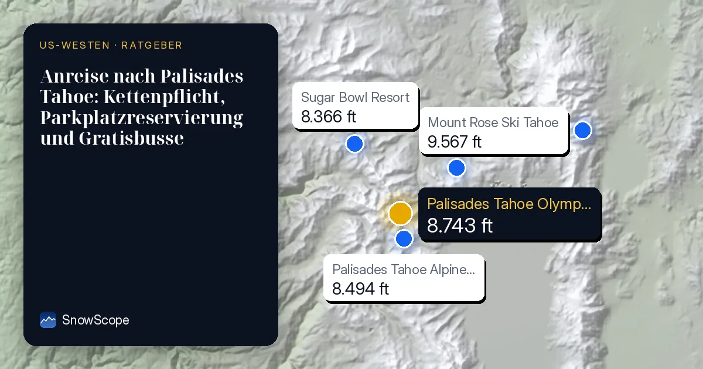
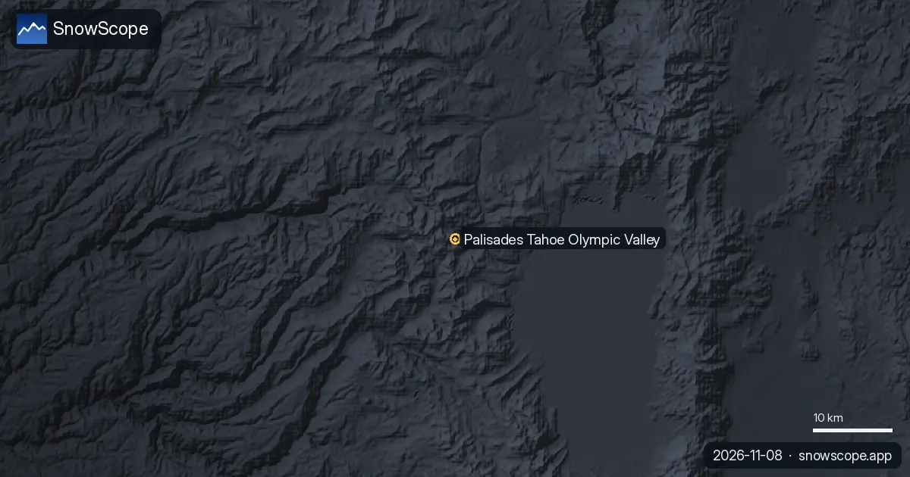
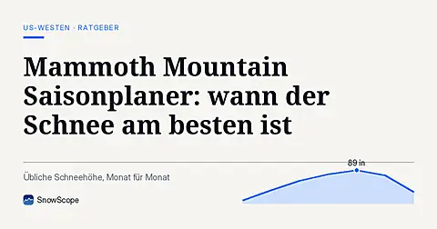

Anreise nach Palisades Tahoe: Kettenpflicht, Parkplatzreservierung und Gratisbusse
Palisades Tahoe Olympic Valley an der Nordwestküste des Lake Tahoe zieht Skifahrer aus Reno, Sacramento und der Bay Area an. Deine Winterfahrt hängt von zwei Dingen ab: Kaliforniens Schneeketten-Regeln bei Schneefall und den Parkplatzreservierungen, die das Resort an arbeitsreichen Wochenenden und Feiertagen verlangt.
Die Live-Schneeprognose für Palisades Tahoe Olympic Valley in der SnowScope-AppSchneehöhen, Pulverschnee-Alarme und 3D-Karte, gratis.

Drei Stunden vom nächsten Flughafen entfernt
Reno ist das nächste Tor: etwa 42 Meilen (68 km) südwestlich. Sacramento liegt 96 Meilen (154 km) westlich, und San Francisco weitere 196 Meilen (315 km) weiter. The Village at Palisades Tahoe befindet sich in der Olympic Valley Road 1960; die Alpine Meadows Base hat ihren eigenen Zugang an der Alpine Meadows Road. Die meisten Fahrer fahren über Donner Summit, wo der Winterverkehr an Schneetagen deutlich langsamer wird.
Die Fahrzeit von Reno beträgt bei klaren Bedingungen normalerweise etwa drei Stunden, aber Schneefall und Schneeketten-Kontrollpunkte können diese Zeit verdoppeln. Fahr früh am Prognosetag los und prüfe die Caltrans QuickMap auf Straßenzustand, Sperrungen und Schneeketten-Regelungen, bevor du gehst.

Was R-1, R-2 und R-3 bei Schneefall bedeuten
Caltrans postet Schneeketten-Kontrollebenen auf Straßenschildern, wenn Schnee fällt. R-0 bedeutet keine Kontrollen. R-1 verlangt Schneeketten auf allen Fahrzeugen außer Personenkraftwagen und leichten Lastkraftwagen unter 6.000 lb mit Winterreifen auf mindestens zwei Antriebsrädern; diese Fahrzeuge müssen dennoch Schneeketten im Auto mitführen. R-2 bedeutet Schneeketten oder Traktionsgeräte auf allen Fahrzeugen außer solchen mit Allradantrieb oder Allradantrieb und Winterprofil-Reifen auf allen vier Rädern, die Geräte im Fahrzeug haben müssen. R-3 verlangt Schneeketten auf jedem Fahrzeug ohne Ausnahmen; Straßen werden oft geschlossen, bevor R-3 gepostet wird.
Die Schilder und das Caltrans- oder CHP-Personal an der Kontrollstelle haben immer das letzte Wort. Funkberichte können hinter den tatsächlichen Bedingungen zurückbleiben. An Tagen mit starkem Schneefall werden Lastkraftwagen an den Kontrollstellen angehalten oder umgeleitet, was den gesamten Verkehr dahinter verzögert. Plan an Schneetagen zusätzliche Zeit in deinen Fahrplan ein.
Bevor du losfährst: Straßenchecks und Timing
Caltrans QuickMap ist die offizielle Quelle für Schneeketten-Regelungen, Sperrungen und aktuelle Bedingungen auf SR-80 und anderen Bergstrecken. Prüf es, bevor du von zu Hause losfährst, und prüf es dann erneut von der Straße aus, wenn die Fahrt länger als erwartet dauert. An arbeitsreichen Pulvertagen können sich die Kontrollstellen-Warteschlangen über Meilen erstrecken, besonders wenn es noch schneit.
Fahr früh los: nicht für Komfort, sondern um zu vermeiden, dass du in einer langsamen Warteschlange steckst oder eine Sperrung dir den Weg versperrt und du über Nacht steckenbleibst. Wenn du bereits R-2 oder höher gepostet siehst, überlege, ob der Tag die Fahrzeit wert ist.
Parken: Buche voraus oder nutze die kostenlosen Busse
Parkplatzreservierungen sind an Samstagen, Sonntagen und allen Feiertagen erforderlich. Das Resort bietet sowohl kostenlose als auch bezahlte Plätze an, aber du musst vor deiner Ankunft buchen. An arbeitsreichen Wochenenden ohne Reservierung bekommst du keinen Platz.
Kostenlose Alternativen gibt es. Tahoe Area Regional Transit (TART) betreibt jeden Tag kostenlose Busse von Truckee und Tahoe City zum Olympic Valley. Der Mountaineer, ein kostenloses On-Demand-Shuttle, verbindet verschiedene Teile des Tals. An einem Schneetag, wenn die Fahrt stressig ist und der Parkplatz voll ist, löst der Bus beide Probleme: Du umgehst die Kontrollstellen-Warteschlange und den Parkplatz.
Schneemuster durch die Saison
Palisades Tahoe liegt in einem Gebirgsbereich, in dem Schnee zuverlässig ist, aber monatlich variiert. Die Mittelhöhe (7.470 ft / 2.277 m) sieht einen typischen Saisonpeak von etwa 80 in (202 cm), mit Schneebedeckung an etwa 190 Tagen eines durchschnittlichen Winters. November bringt normalerweise wenig Schnee in der Basis, aber bis zu 49 in (126 cm) höher oben in einem von zehn Wintern. Dezember und Januar bringen stärkere Ansammlungen, und März ist der tiefste Monat insgesamt.
Die beste Woche historisch ist Woche 10 (Anfang März), wenn die Mittelhöhe in neun von zehn Wintern eine Mediantiefe von etwa 65 in (163 cm) aufweist. Der letzte Winter (2025–26) erreichte 65 in (166 cm) in der Mittelhöhe mit 120 Schneetagen. Früh in der Saison kann die Schneedecke dünn sein und felsige Stellen können durchscheinen; unter flachem Schnee begrabene Felsen sind eine Gefahr.
Lawinensicherheit, wenn du das Resort verlässt
Wenn du planst, außerhalb der Resortgrenze zu skifahren oder zu wandern, prüfe zuerst die Lawinenvorhersage für das Tahoe-Gebiet. Das Portal avalanche.org veröffentlicht täglich Vorhersagen. Selbst kurze Off-Piste-Ausflüge erfordern ein Lawinentransceiver, eine Sonde und eine Schaufel sowie die Fähigkeit, diese zu nutzen. Geh niemals allein und niemals ohne Prüfung des Bulletins.
Tipps für Skifahrer
- Prüfe die Caltrans QuickMap und die Wettervorhersage, bevor du von zu Hause losfährst. An Schneetagen fahr sehr früh los oder bleib zu Hause.
- Trag Schneeketten, auch wenn du Allradantrieb hast: R-2-Regelungen erfordern sie im Auto.
- Buche Parkplatzreservierungen lange voraus für Wochenenden und Feiertage. Ohne Reservierung bekommst du keinen Platz.
- Nutze den kostenlosen TART-Bus von Truckee oder Tahoe City, wenn die Vorhersage starken Schneefall zeigt. Er vermeidet sowohl die Kontrollstellen-Warteschlange als auch den Parkplatz.
- Bevor du Off-Piste gehst, lies die Tahoe-Lawinenvorhersage und geh mit anderen, die die richtige Ausrüstung und Schulung haben.
Zu diesen Zahlen
Die Schneehöhen der Skigebiete sind der meiste Schnee in den oberen Hängen am angegebenen Tag; es sind Schätzungen für eine Fläche, keine Messung an einem Punkt. Prognosen können sich ändern. Lies vor dem Freeriden immer den offiziellen Lawinenlagebericht.
Offizielle Lawinenlageberichte: avalanche.org (US national portal)
Diesen Bericht zitieren
Für Forschung, Lehre oder Presse: Zahlen und Grafiken sind unter CC BY 4.0 mit dieser Quellenangabe frei nutzbar.
SnowScope (2026), Anreise nach Palisades Tahoe: Kettenpflicht, Parkplatzreservierung und Gratisbusse, https://snowscope.app/blog/de/2026/11/how-to-get-to-palisades-tahoe-chain-controls-parking.html, abgerufen am 2026-11-09
SnowScope (Atlas Labs). (2026, November 9). Anreise nach Palisades Tahoe: Kettenpflicht, Parkplatzreservierung und Gratisbusse. SnowScope snow reports. https://snowscope.app/blog/de/2026/11/how-to-get-to-palisades-tahoe-chain-controls-parking.html
BibTeX
@misc{snowscope2026howtogettopalisadestahoe,
author = {{SnowScope (Atlas Labs)}},
title = {Anreise nach Palisades Tahoe: Kettenpflicht, Parkplatzreservierung und Gratisbusse},
year = {2026},
month = nov,
howpublished = {\url{https://snowscope.app/blog/de/2026/11/how-to-get-to-palisades-tahoe-chain-controls-parking.html}},
note = {Published 2026-11-09 18:01 UTC; accessed 2026-11-09}
}· CC BY 4.0 · Methoden, Daten und Werkzeuge →
Palisades Tahoe Olympic Valley folgen
Gratis: eine Nachricht, wenn Neuschnee kommt, und jeden Morgen die Vorhersage.
Weitere Schneeberichte

Mammoth Mountain nach Saison planen: etwa 93 in (235 cm) übliches Maximum an der Mittelstation in 46 vergangenen Wintern, März am tiefsten, lange Frühjahre, schwankende Winter.

Jackson Hole hält Schnee bis tief in den Frühling auf seinen hohen Gipfeln. Wir haben sechs verbreitete Aussagen gegen 46 Winter Schneegeschichte überprüft. Daten von November 2026.

Big Sky, Montana, anschaulich: 5.850 Acres unter dem Lone Peak, und Schnee, der in 46 vergangenen Wintern nahe dem Gipfel etwa fünfmal so tief war wie im Tal.